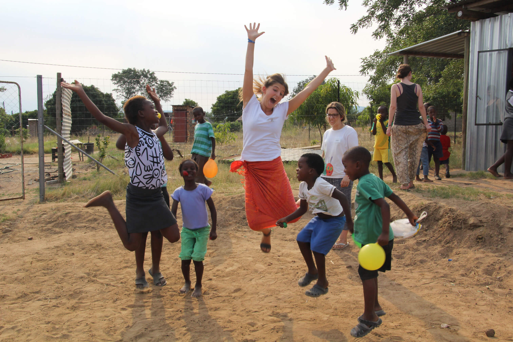

The organisation has philanthropists, students and volunteers from across the continent who are dedicated and willing to help

We believe that all children and adolescents deserve to have a decent present and future. In South Africa and around the world, we work every day to give children a good start in life, as well as the opportunity to learn and be protected from violence or any other damage. We make sure that they meet their specific needs and that their voices are heard. We achieve lasting results for millions of children and adolescents, including those who are more difficult to reach.

All smiles
Save the document by pressing Ctrl + S